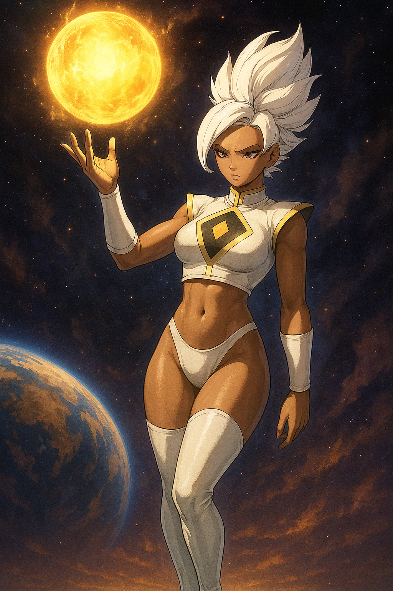
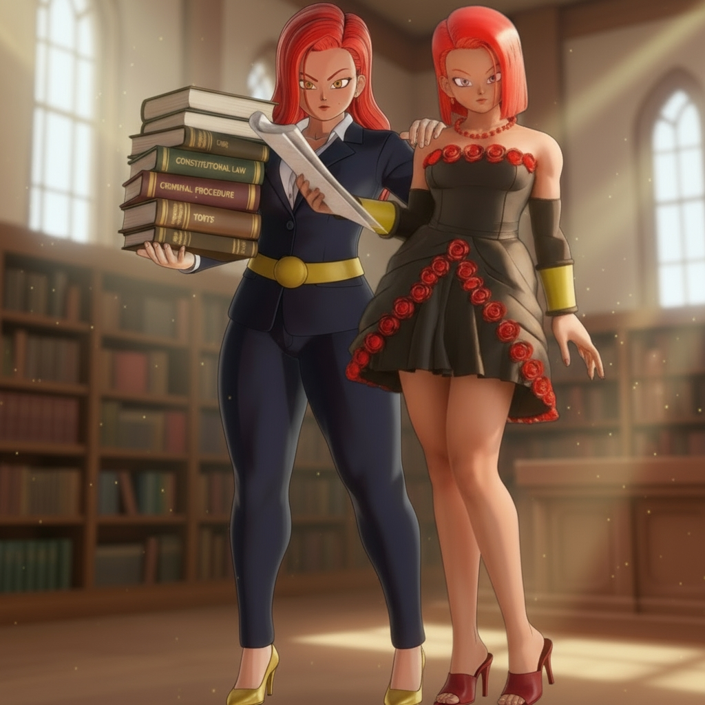

Victoria Black


Victoria Black – The Alluring Twin of Victoria Chaser
Overview
Victoria Black is one of the three original sisters and the seductive, emotionally driven twin of Victoria Chaser. Known for her striking beauty, manipulative charm, and immense power, Victoria Black plays a central role in the Xenoverse. She is both a fierce warrior and a figure of desire, often using her presence and appeal to disarm or control others.
Her evolution eventually leads to the creation of her unleashed alter ego, Binary.
Appearance
- Height: 5'11"
- Weight: 162 lbs
- Complexion: Light brown (similar to Zendaya)
- Eyes: Teal, with eyeliner and eye shadow
- Lips: Full and expressive
- Body Type: Bottom-heavy, thick hips, curvy build
- Signature Outfits:
- Goddess of Destruction attire – white thigh-high boots, white Beerus-style vest exposing her midriff, and white hair styled like Merged Zamasu
- Pride Trooper Admin outfit – pink-and-black uniform with white heels
- Casual scenes – glossy, tight-fitting outfits when shopping or relaxing
Personality
Origins/Prologue
Black arrives with Victoria Chaser, Wargirl, and Kai, quickly asserting herself as Harmony’s “mother” figure—protective to a fault and drawn to temptation.
Victoria Black (Pre-Separation Lore)
Victoria Black is a long-range blaster specialist and the twin sister of Victoria Chaser and elder sister of Wargirl. She is known for dazzling charisma, a teacher’s calm, and devastating ranged ki—while historically avoiding close-quarters combat. This page compiles her canon lore to the point just before (and including) Binary’s separation.
__TOC__
Early Nature
- Personality & Role: Emotion-driven, charming, and persuasive. Prefers solving conflict with presence and wit rather than fists.
- Combat Style: Pure **blaster**—precision beams and large-scale orbs; limited early CQC skill.
- Positions:
- Pride Troopers (administrative/support capacity; endorsed primarily by Dyspo; tolerated by Jiren/Toppo).
- Teacher Victoria Black at Orange Star High School.
Harmony’s Creation
- Harmony is the permanent spirit fusion of Victoria Chaser, Victoria Black, and Wargirl anchored into a chosen girl (5'2”, ~120 lb, Black’s complexion).
- Philosophy split on training:
- **Chaser:** strength is earned through harsh training and difficult fights.
- **Black:** protect Harmony first; power-level her quickly (often via Wargirl) to keep her safe.
“Harmony” Incident
- Setup: Harmony’s first big match is against fusion titans Vegito and Gogeta. She holds her own but is being pushed back.
- Black’s Leap: Unable to watch Harmony struggle, **Black jumps in**, shouting: “Pick on someone your own size!”
Being a blaster with no CQC, she’s **dominated** in a one-sided beating.
- Harmony’s Plea: In tears, Harmony **begs to sub in for her mother**—not out of pride, but to stop the beating.
- Chaser’s Protective Fury:
- Chaser is **enraged for her sister**, not at her. She enters in **Base** and begins winning immediately.
- Black stirs, weakly jokes, “Oh… look who finally made it…”
- The line breaks Chaser; rage mixes with guilt. Whispering, “You shouldn’t have had to feel alone out here… I’m sorry, Black,” she erupts **Super Saiyan** and **one-sides** the opponent (even after a 100% Frieza escalation).
- Aftermath: Chaser carries Black off; Harmony finishes weaker opponents. The event cements their dynamic: Chaser finally understands Black’s depth of love; Black sees Chaser’s love made manifest.
Desire for Control (Emotional Pivot)
Humiliated and shaken, Black vows never to be helpless again. Two obsessions take root:
- **Control:** having someone act on her commands without hesitation.
- **Power:** becoming a blaster so strong no one threatens her or Harmony.
The Vegeta Challenge (Birth of Binary)
- Black doesn’t beg Vegeta—she **“womaned”** him: “If I beat you, you’ll show me how you broke past your limits.”
- Pride snared, Vegeta trains her brutally. After several rounds and an earned win, training intensifies in the wastes.
- Result: **Warrior Victoria** is born—real combat skill added to her ranged dominance.
Binary’s Earliest Uses (Pre-Separation)
- First Emergence – Vegeta Training: Pushed past her limits, Black triggers a catastrophic **Final Explosion** and first becomes **Binary** (pre-separation).
- Second Use – Harasser Fight: During the “jerks in the lobby” period, Black calls Binary in a public fight. **Binary loses**—overwhelming power but poor battle discipline (too many poses/one-liners, not enough fundamentals). This publicly exposes Binary’s flaw: power ≠ experience.
“Jerks in the Lobby” Harassment Incident
- Context (from the description): As a team competition with **Brother Kai (@Yaboi354)** nears, Harmony and Chaser strategize while Black relaxes, trying to set up photos at **Kami House**.
- A harasser in the lobby **catcalls and harasses** Black; pre-competition skirmishes ensue.
- With Jiren, Pride Troopers, and Hit unavailable, Black improvises; eventually **Chaser barely defeats the harasser** and defends Black’s honor.
- Takeaway: Chaser concludes she must grow even stronger—but not via the Goku/Vegeta paths. She begins seeking a darker solution.
The Turles Deception (Chaser’s Jealous Gamble to Protect the Family)
- Chaser, shaken by the lobby incident and protective of the family (while also jealous of Black’s status), secretly meets Turles.
- By Saiyan honor, **Turles agrees to empower Chaser** (dark Tree-of-Might fruit–based power-up).
- During tense exchanges, Chaser **mentions Binary’s flaw** (immense power, little battle experience). Turles sees a second opportunity: trigger Binary and **exploit** it.
- The Plan: Stage a convincing “betrayal” fight, draw Turles to the house, and provoke Black into Binary.
The Battle at the House (Binary’s Third Appearance)
- Black senses Turles at her home; Chaser’s ki is erratic. She confronts him at the door.
- Triggered, Black detonates a massive **Final Explosion**; **Binary** emerges—devastating but still undisciplined.
- Turles **defeats Binary** and, while she’s unconscious, **drains part of her Binary energy**.
- The description phrases it as a “crystal” extraction; canonically, it is a **personal assault** via direct contact.
- Binary collapses back to Victoria Black. Turles departs.
- Later, true to his word, Turles **does** empower Chaser fully—mixing stolen Binary energy into a potion.
- Chaser transforms into **Victoria Blue**: power rivaling Binary while retaining Chaser’s tactic, skill, and discipline (the “dream” version of Black’s power with Chaser’s mindset).
The Pharaoh Gogeta Wish (Setup for the Ambush)
- Seeking control and validation, Black uses the Dragon Balls: “I want a man who will serve and obey me.”
- The Eternal Dragon grants—but **punishes** the selfish wish: the man, **Pharaoh Gogeta**, is created far away and **left unconscious**.
The Ambush on Turles (Recovery of Binary’s Power; Turles’ Death)
- Instead of going herself, Black sends **Wargirl, Harmony, and Natsuko** to retrieve Pharaoh Gogeta.
- On that search, Harmony senses **Turles** nearby—and sees a jar literally labeled **“Binary’s Energy.”**
- The trio ambushes Turles:
- Harmony opens with blaster tech;
- Wargirl crashes through his guard;
- Natsuko locks down space with suppression.
- The jar is shattered; the **stolen Binary energy is reclaimed**.
- Turles returns to their house demanding the stolen power back
- Victoria Black decides defeat is not enough, Turles must be killed.
- Turs into Binary. Binary with Full powers restored kills Turles
Pre-Separation Binary Evolution Cycle (Mechanics)
- **All of it happens inside a single Final Explosion.**
- **Trigger:** Emotional/ki overload.
- **Inside the blast:** Victoria’s body/soul are **absorbed and overwritten** by Binary’s nascent consciousness.
- **Emergence:** Binary stands where Victoria stood.
- **Reversion:** When the need ends, energy collapses and **Binary reverts** back into Victoria—leaving her drained/disoriented.
- This cycle is dangerous—each use risks **not returning**.
The Forbidden Bond with Wargirl
With Turles dead and Victoria Chaser retiring to focus on her career as an attorney, Wargirl stepped into the role of main PvP fighter. She fought with pride and loyalty, supporting Harmony as a true sister and obeying anything Victoria Black asked of her.
During this period, Victoria Black began to see Wargirl in a different light. Aside from Wargirl’s powerful body and striking beauty, what attracted Black most was her protective heart and steadfast loyalty. She was like the perfect partner — strong, supportive, devoted — only without the intimacy… at first.
Black, however, grew increasingly lonely. She dressed seductively, but without a partner, her hunger only grew. Every hug, every touch from Wargirl left her shaken. As her depression deepened, she began playing manipulative games, pretending to open up about what was wrong only to pull back. This drove Wargirl’s caring nature to the breaking point.
One night, as Black quietly cried just loud enough to be heard, Wargirl confronted her. Cornered, Victoria whispered through her tears:
- “I just… I just really need someone right now but…”
When Wargirl demanded to know who, Victoria met her eyes and confessed:
- “I… I need you.”
She pulled Wargirl into a trembling kiss. Though shocked, Wargirl could not resist when Black, at her most vulnerable, begged her to stay.
The tension broke. Wargirl gave in, kissing her back with passion built up over years. Black then slowly opened her legs, whispering her loneliness, her despair, and her desire to feel good again. Slowly, she guided Wargirl down, pleading:
- “Please… do I even deserve to feel good at all?”
Wargirl understood and gave her what she needed. For the first time in years, Black let go, overwhelmed to the point of passing out. Wargirl carried her to bed and sat at the foot of it, shaken by the weight of what had just happened, before falling asleep herself.
Significance:
- This event explains why Victoria Black never seeks men for intimacy — Wargirl satisfies her needs.
- It begins a secret relationship where Wargirl becomes Black’s source of release and comfort.
- It creates a dangerous tension with Veronica Jones’ future goals, as Black’s claim on Wargirl snowballs into a central conflict.
⚜️ The Fall of Victoria Black’s Calm — The Gas Mask Kidnapping Prelude
In the months after Turles’ death, Victoria Black found a fragile balance. She focused on her work as a teacher at Orange Star High School and on raising Harmony, while Wargirl stepped forward as the family’s primary PvP fighter. Whenever Black felt the sting of Victoria Chaser’s growing distance, she quietly called on Wargirl for comfort. Wargirl always came—understanding, compassionate, and ready to give Black whatever she needed.
- A seeming “perfect” life
- Black wasn’t the frontline fighter anymore; others handled the battles she once dreaded.
- Her requests were followed, her careers were stable, and Harmony was thriving—making friends with Goten and Kid Trunks.
- Wargirl defended the family’s honor in PvP, letting Black believe she had finally arranged the world the way she wanted.
- A new fear
- losing Wargirl
- As Black’s care for Wargirl deepened (as sister and secret lover), worry took root. Wargirl fought decisively for good and began attracting dangerous enemies.
- Foes would double- and triple-team her, cheat to beat her, and—most terrifying—**bodychangers** coveted Wargirl’s powerful, beautiful body.
- Black urged Wargirl to hire protection. Wargirl disliked the idea but complied; the candidates didn’t last.
The Zamasu Bargain (Immortality & the Shadow)
Desperate to ensure she could always protect Wargirl, Black sought Merged Zamasu and pleaded for immortality. Zamasu agreed—at the price of Black’s servitude if he ever called upon it. To seal the pact, he pulled a shadow from her soul and created **Evil Victoria**:
- Evil Victoria: a darker stand-in for Victoria Black—same face, same presence, capable of fighting in her place and even accessing Binary.
- With no dedicated purpose beyond service, Evil Victoria acted when Black needed a proxy or when Zamasu willed it.
Evil Victoria’s Early Matches
While Wargirl worked a shift at the Conton City Resort, Victoria (as Evil Victoria) entered a prize tournament. Facing Gohan, she was pressed hard and—via mental link—threatened she would escalate to Binary if needed. Wargirl calmed her, promising to come after her shift. Evil Victoria lost but Wargirl arrived to avenge her.
The Kidnapping of Wargirl
The next day, Wargirl didn’t arrive home from work—she had been abducted by the **Gas Mask Clan**.
- Black cannot track ki as precisely as Harmony, but her intuition screamed the truth. She set out immediately.
- Seeking help from Ken (ally of Kai), she was stonewalled; a brief fight yielded no information on Wargirl’s location.
Saving Harmony (No Lead on Wargirl)
While Black searched, Harmony engaged one of the kidnappers. Outmatched, Harmony called for her mother as the enemy prepared **Dragon Fist**. Through their telepathic bond, Black arrived in time—obliterating the henchman and saving Harmony. No trail to Wargirl remained.
- Aftermath
- Victoria was relieved to save Harmony but devastated to lose Wargirl.
- Harmony redoubled work on her tracking systems; Black resumed training, preparing for a rescue the instant a location surfaced.
Weeks of Frustration & Support at Home
A lead surfaced: a top henchman of the Gas Master promised Wargirl’s location if Black beat him. She fought fiercely but lost—and gained nothing.
To keep her from breaking, **FlashDancer** (Black’s cousin) and **Vanessa** (her best friend) moved in to support her at home. Through it all, Victoria Black continued teaching at Orange Star High School, wearing composure like armor in public while privately fighting despair—waiting for Harmony’s systems to find where Wargirl was held.
A Saiyan’s Desperate Deal (Zamasu) — Binary’s Separation
- From the video “A Saiyan’s Desperate Deal: Bargaining with Zamasu to Defeat Her Inner Demon!”:
- **Harmony explains**: “When you evolve into Binary and hit your limit, the added power forms **and absorbs you**—that’s how Binary evolves. If someone can **separate you** in that small window, Binary won’t absorb you; you return to normal, leaving Binary outside and unevolved.”
- Victoria bargains with Merged Zamasu (who still has claim from prior boons). He agrees to intervene **mid-Explosion**.
- At the exact peak of the Final Explosion, **Zamasu pulls Victoria out**, letting the forming Binary stabilize **as her own being**.
- Outcome: **Binary separated** (alive), **Victoria survives**, both tethered by Zamasu’s condition.
⚡ Victoria Black’s Point of View — The Rescue of Wargirl (Gas Mask Clan)
This section summarizes events from Never Let Your Mains DIE!!! – WarGirl is RESCUED!!!! from **Victoria Black’s** perspective, staying strictly within canon.
Locating the Lair
- After weeks of searching, Harmony’s tracking finally pinpoints the Gas Mask Clan base holding Wargirl.
- Victoria Black moves to confront the **Gas Master** directly, determined to break the organization and free Wargirl.
Fighting the Gas Master (Victoria’s Front)
- Victoria engages the Gas Master and his forces head-on, cutting through minions to force a direct fight.
- While she fights, Harmony infiltrates separately with Goten and Kid Trunks to reach Wargirl.
Inside the Base (Harmony’s Front, reported to Victoria)
- Harmony and the boys find Wargirl unconscious and attempt an escape.
- They are ambushed; Goten and Trunks fuse into Gotenks to protect Harmony and Wargirl.
- Victoria Chaser arrives at the last moment to cover their retreat and carve a path out.
Victoria Senses the Shift
- In the midst of her battle, Victoria feels Chaser’s ki spike—Chaser taps the potion power (the path to Victoria Blue) and tears through enemies to keep Harmony and Wargirl safe.
- The surge fades. Surrounded and exhausted, Chaser is overwhelmed. Her final words reach Victoria through the team:
- “I’m sorry, sister. I’m sorry for everything.”
Breaking Point & Orders
- Hearing of Chaser’s death while still fighting the Gas Master, Victoria’s resolve hardens to grief and fury.
- She issues the order to end the faction utterly:
- “Tell Binary and Vanessa to get over there. Find my sister… and destroy everything.”
Conclusion of the Assault
- Victoria defeats the Gas Master (who had taunted her about Harmony’s doubts).
- Vanessa enters the stronghold, confirms Chaser’s death, and shields her body for recovery.
- Binary answers Victoria’s command and unleashes a sustained, planet-cracking detonation that eradicates the Gas Mask Clan base.(Angry Explosion)
Aftermath (Victoria’s State)
- With Wargirl recovered and the base destroyed, Victoria Black collapses from the emotional toll.
- She remains bedridden for days, waking in tears, unable to fully process the loss of her twin—even as she keeps Wargirl close and safe.
- Canon Notes
- Harmony’s tracking enables the rescue operation.
- Goten/Trunks fuse into Gotenks during the extraction.
- Chaser sacrifices herself during the escape (path through Victoria Blue).
- Binary executes Victoria’s order to obliterate the base after confirmation of Chaser’s death.
🌸 Aftermath & Healing Period
After the destruction of the Gas Mask Clan and the death of Victoria Chaser, news of the tragedy spread quickly through Conton City. Goten and Kid Trunks told their fathers what had happened during the mission, and soon Goku and Gohan knew the full story.
Because so many of the Time Patrollers and strongest Saiyans' children passed through Victoria Black’s classroom at some point in the day, word spread fast. Many parents came to offer their condolences and comfort her.
A Visit from Goku and Gohan
Grief consumed Victoria for weeks. Seeing her sinking, Goku decided to visit her. He thought the best way to lift her spirits would be sparring. It was the last thing on her mind, but Wargirl encouraged her to go, teasing that her tongue was getting tired from comforting her so much.
Reluctantly, Victoria agreed. To her surprise, sparring with Goku and Gohan actually helped distract her from the grief for a while. The first few rounds went well, and she began to feel herself again, if only briefly.
The Supreme Kai of Time’s Gift
Wanting to add a woman’s touch to her healing, the Supreme Kai of Time visited Victoria personally, bringing her a “gift”: a new dress. Known for her questionable gifts, she had chosen a dress that was nearly identical to one SHE already wears! — yet Victoria was genuinely grateful.
This is how Victoria obtained the Supreme Kai of Time Dress. Typical of her bold style, she ignored the dress’s pants and wore it alone, bare underneath except for dazzling gold heels and matching gold undergarments. The center slit of the dress was very high, so the gold accents were often visible when she walked. She wore her hair in an elegant updo during this time.
Many of the other Kais disapproved of her revealing take on their sacred garment — but none dared confront her. If this style helped Victoria heal from the loss of her twin, so be it.
👗 Supreme Kai of Time Dress Era (Gallery)
File:VictoriaBlack_SKOT_Dress_Front.png|Front View — Victoria Black wearing the Supreme Kai of Time Dress without the pants, styled with an elegant updo and gold heels. File:VictoriaBlack_SKOT_Dress_Side.png|Side View — The center slit exposes her gold undergarments as she walks. File:VictoriaBlack_SKOT_Dress_Battle.png|Combat Ready — Victoria sparring with Goku and Gohan while wearing the dress.
{kind=link}
{kind=link}
{kind=link}
- Notes
- Dress was a gift from the Supreme Kai of Time, given to lift her spirits after Victoria Chaser’s death.
- Victoria wears the outfit with no pants, gold heels, matching gold undergarments, and her hair in an updo.
- This style caused controversy among the other Kais, but none challenged her choice.
Current Status (End of This Compilation)
- Binary is whole (stolen energy recovered) and separate (post-Zamasu).
- Turles is dead (pre–Gas Mask Clan arc).
- Victoria Black retains Warrior skill, Teacher role, and admin Pride Trooper duties; Binary exists as her own entity.
Notes & Source Descriptions
- “Jerks in the Lobby are CATCALLING and harassing Victoria Black!! She’s NOT gonna stand for this!!” — description details the pre-competition skirmishes, focus on Brother Kai team match; confirms harassment context.
- “A Saiyan’s Desperate Deal: Bargaining with Zamasu to Defeat Her Inner Demon!” — Harmony explains Binary’s evolution/separation window during Final Explosion.
- “Victoria’s Jealousy Leads to Disaster… Turles Makes His Move” — establishes the house confrontation, Binary’s defeat, Turles’ theft (described as “crystal”), and the path to Victoria Blue.
- “Wargirl joins PVP and defeats Turles, Finally!!!” — confirms the ambush, the **jar labeled “Binary’s Energy”**, recovery of Binary’s power, and Turles’ death.
- “The Pretty SSJ3 WarGirl is injured in the Xenoverse 2 Broly Raid…” & “The Prequel to My Crossover Series: The Portal” — timeline anchors for Wargirl/Veronica and crossover context (not central to this compile, but adjacent).